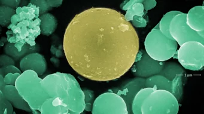
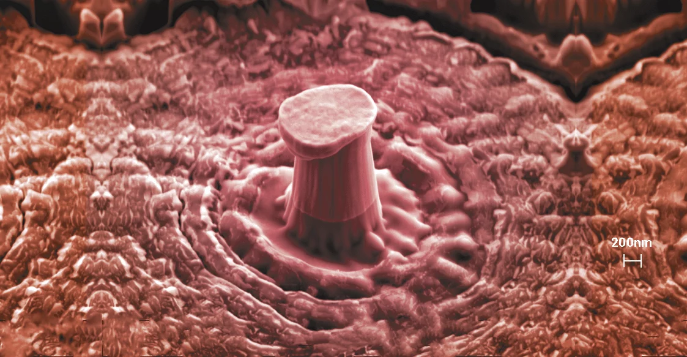
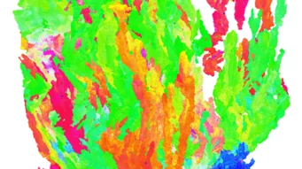
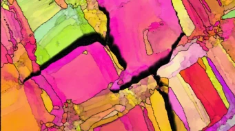
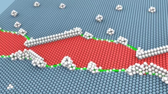

Self-healing organic coatings prevent corrosion in steel. The addition of inorganic or organic fillers can further enhance the corrosion resistance. Titanium Dioxide (here coloured yellow) is a versatile inorganic filler with remarkable physicochemical properties.
The best books
Our news


A nanopillar fabricated in a nanocrystalline nanotwinned Cu-Ag alloy deformed to an engineering strain ~20%. This material exhibits remarkable hardness and yield strength, surpassing that of many structural metal alloys.”

A 3D "grain" of an additively manufactured stainless steel was selected from a large volume 3D electron backscatter diffraction (EBSD) dataset, collected by the in-house built ELAVO system. The 3D analysis enables correlation between orientation variations, texture evolution, and alloys' properties.

Close-up of a 3D printed metal surface. The dark parts are cracks in the metal, and the different colours represent various grains. The cracks do not appear everywhere; they prefer some parts of the metal over others. We use electron backscatter diffraction to find out which grains are more likely to crack aiming to design crack-resistant materials.

Turbine blades in gas turbines or jet engines need to withstand extreme temperatures and loads. Under these conditions, diffusion-mediated creep is the main failure mode. Developing so-called superalloys with improved creep resistance requires therefore an atomic-scale understanding of dislocation-vacancy interactions.
Turbine blades in gas turbines or jet engines need to withstand extreme temperatures and loads. Under these conditions, diffusion-mediated creep is the main failure mode. Developing so-called superalloys with improved creep resistance requires therefore an atomic-scale understanding of dislocation-vacancy interactions.
Turbine blades in gas turbines or jet engines need to withstand extreme temperatures and loads. Under these conditions, diffusion-mediated creep is the main failure mode. Developing so-called superalloys with improved creep resistance requires therefore an atomic-scale understanding of dislocation-vacancy interactions.